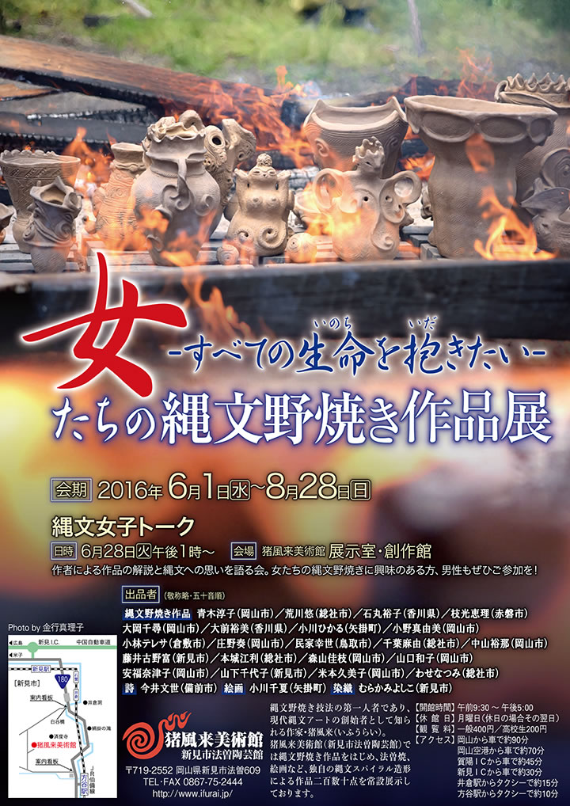
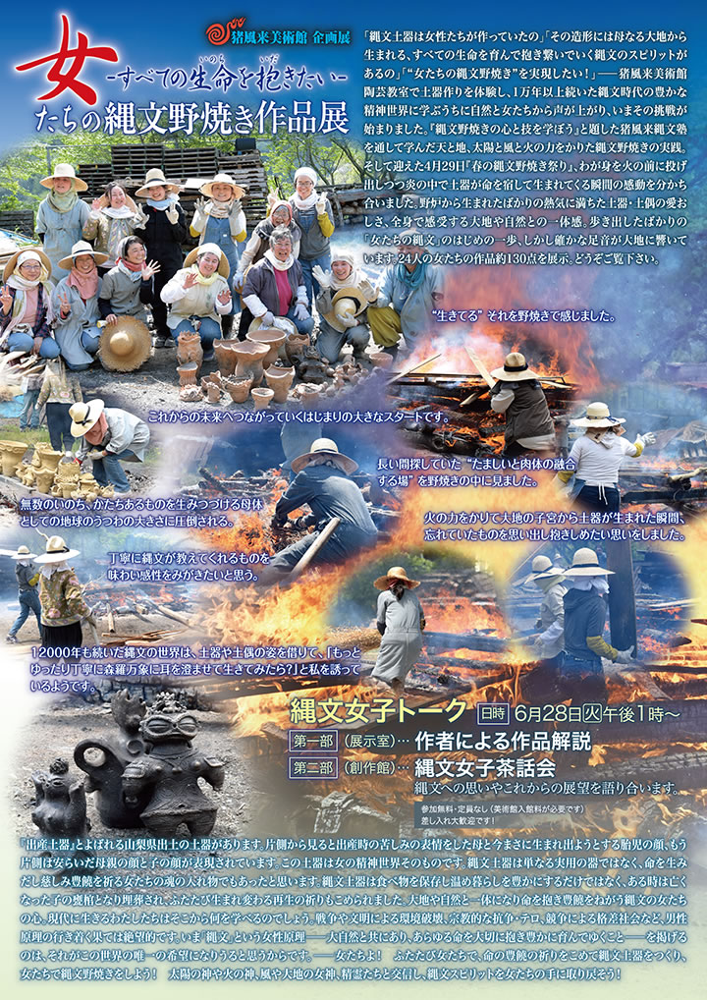

|  |
|  |
| 【女たちの縄文野焼き作品展チラシ】 →PDF版を開く |
【出品者】（敬称略・五十音順）
縄文野焼き作品…青木淳子（岡山市）／荒川悠（総社市）／石丸裕子（香川県）／枝光恵理（赤磐市）
大岡千尋（岡山市）／大前裕美（香川県）／小川ひかる（矢掛町）／小野真由美（岡山市）
小林テレサ（倉敷市）／庄野奏（岡山市）／民家幸世（鳥取市）／千葉麻由（総社市）／中山裕那（岡山市）
藤井古野富（新見市）／本城江利（総社市）／森山佳枝（岡山市）／山口和子（岡山市）
安福奈津子（岡山市）／山下千代子（新見市）／米本久美子（岡山市）／わせなつみ（総社市）
詩…今井文世（備前市）
絵画…小川千夏（矢掛町）
染織…むらかみよしこ（新見市）
「縄文土器は女性たちが作っていたの」
「その造形には母なる大地から生まれる、すべての生命を育んで抱き繋いでいく縄文のスピリットがあるの」
「“女たちの縄文野焼き”を実現したい！」
――猪風来美術館陶芸教室で土器作りを体験し、1万年以上続いた縄文時代の豊かな精神世界に学ぶうちに
自然と女たちから声が上がり、いまその挑戦が始まりました。
『縄文野焼きの心と技を学ぼう』と題した猪風来縄文塾を通して学んだ天と地、太陽と風と火の力をかりた
縄文野焼きの実践。
そして迎えた4月29日『春の縄文野焼き祭り』、わが身を火の前に投げ出しつつ炎の中で土器が命を宿して
生まれてくる瞬間の感動を分かち合いました。
野炉から生まれたばかりの熱気に満ちた土器・土偶の愛おしさ、全身で感受する大地や自然との一体感。
歩き出したばかりの「女たちの縄文」のはじめの一歩、しかし確かな足音が大地に響いています。
24人の女たちの作品約130点を展示。どうぞご覧下さい。
=∴=∵=∴=∵=∴=∵=∴=∵=∴=∵=∴=∵=∴=∵=∴=∵=∴=∵=∴=∵=∴=∵=∴=∵=∴=∵=∴=
《縄文女子トーク》
作者による作品の解説と縄文への思いを語る会。
女たちの縄文野焼きに興味のある方、男性もぜひご参加を！
午後1時～
第一部（展示室）…作者による作品解説
第二部（創作館）…縄文女子茶話会
※参加無料・定員なし（美術館入館料が必要です）
差し入れ大歓迎です！